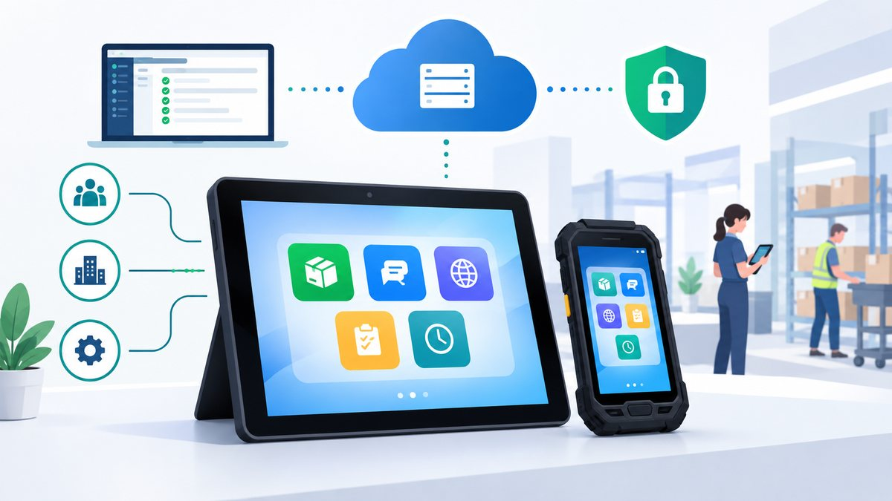

What is a multi-app Android kiosk?
A practical guide for IT administrators planning, deploying and supporting shared Android devices.
A multi-app kiosk is an Android device configured to give users access to a predefined set of business applications instead of the unrestricted Android experience. Unlike a single-app kiosk, it lets users switch between several approved apps for a complete work process.
For example, a warehouse employee might need an inventory scanner, a work-order app, a browser-based portal and a communication tool, all on one shared device.
- Give employees quick access to the tools they need.
- Reduce accidental changes to device settings.
- Standardize the experience across a fleet of devices.
- Manage deployments and policies centrally through Intune.
Shared devices, one managed experience

One managed device. The right apps. A clearer workflow.
Multi-app kiosk mode is useful when devices are shared, work is task-based, and IT needs a consistent experience that is easier to support.
Purpose-built app access
Show the applications and web links needed for a role, rather than a full collection of unrelated apps.
More controlled usage
Apply kiosk and device restriction policies to limit access to approved apps and selected system features.
Centralized administration
Use Intune to assign apps, deploy supported configurations, and review device and policy status.
Designed for shared devices
Support common-use devices in production, logistics, retail, healthcare administration and reception areas.
Consistent day-to-day use
A familiar launcher and layout can reduce confusion when devices move between shifts or users.
Room for the whole workflow
Users can move between approved apps and supported web links without needing a separate device for each task.
Intune manages the device. Managed Home Screen shapes the experience.
These components work together, but they have different roles in an Android Enterprise deployment.
Microsoft Intune
Enrolls and manages supported devices, assigns applications, deploys configuration policies and reports available compliance and device status.
Managed Home Screen
Acts as the managed launcher in supported multi-app kiosk scenarios and presents the approved apps and configured shortcuts.
Android Enterprise policies
Define the supported kiosk mode, application availability and relevant device restrictions. Review the whole configuration as one security design.
Important: Managed Home Screen is not a substitute for device restrictions. App behavior and configuration determine whether other Android features can be reached.
How to configure a multi-app Android kiosk in Intune
Use these steps as a planning guide. Exact options vary by Android Enterprise enrollment type, device manufacturer, OS version and the current Intune admin center.
Choose enrollment
Decide whether a dedicated device or a supported fully managed, user-affiliated device best matches the scenario.
Enroll and group
Set up Android Enterprise enrollment, confirm devices appear in Intune, and assign them to the intended device groups.
Deploy required apps
Add the business apps and Managed Home Screen through the supported Intune and Managed Google Play workflow. Assign required installations.
Configure kiosk mode
Create the applicable device restrictions profile and select multi-app kiosk mode and the permitted applications.
Customize the launcher
Use a Managed Home Screen app configuration policy for the supported layout, app list, web links and user experience settings.
Apply restrictions
Review system settings, status bar, notifications and other available controls against your business and security requirements.
Test real workflows
Check every app, sign-in, links, connectivity, reboot recovery, app updates and approved maintenance procedures on test devices.
Roll out and support
Deploy in stages, monitor policy and app status, document troubleshooting, and review the setup as requirements change.
Deployment tip: install and assign the required apps before expecting them to appear in Managed Home Screen. Pilot the complete user experience before applying the configuration to a large device fleet.
Shared devices need clear ownership, not just kiosk mode
When many employees use the same Android device, it can be unclear who should report a problem or check its condition. A device might stay in use for long periods, an app may become unresponsive, or an issue may go unnoticed between shifts.
Good operations combine Intune management with a simple process for checking devices, reporting faults and deciding when maintenance is needed.
- Assign responsibility for device checks and fault reporting.
- Track recurring app, network and device issues.
- Use available Intune diagnostics and compliance information.
- Define when to restart, update or replace a device.
Do all kiosk devices need scheduled reboots?
No. A regular restart can be useful in a specific environment, but it should not be treated as a universal requirement. Base restart procedures on observed issues, app requirements, vendor guidance and operational needs. Avoid disrupting active work without a clear reason.
Monitor Android uptime and reboot history
When investigating a shared-device issue, IT may need to know whether the device restarted shortly before the problem occurred. Reboot history and uptime can add context to other evidence, such as Intune status, application diagnostics, connectivity information and user reports.
RebootMonitor is an Android app designed to track uptime, reboot history and reboot statistics. According to its product description, monitoring data is stored locally on the device. It is an optional complement to a device-management process, not a requirement for Intune kiosk mode, and not a replacement for Intune.
Learn more: deploying RebootMonitor with Intune and Managed Home Screen, reboot monitoring for shared device fleets and Android kiosk monitoring.
Before deployment, validate compatibility with your Android Enterprise enrollment type, kiosk restrictions, app permissions and organizational security requirements.
Management, launcher and monitoring are different jobs
Use each component for what it is designed to do.
| Component | Primary purpose | What it does not replace |
|---|---|---|
| Microsoft Intune | Enrollment, app deployment, configuration policies and supported management and compliance reporting. | It does not guarantee that every diagnostic detail is available for every device. |
| Managed Home Screen | Controlled launcher experience for approved apps in supported kiosk scenarios. | It is not a standalone security boundary; pair it with suitable device restrictions and testing. |
| RebootMonitor | Tracks Android uptime and reboot history on the device. | It does not enroll, configure, secure or remotely manage a fleet like Intune. |
Android multi-app kiosk and Intune FAQs
Can I show multiple applications on one Android kiosk device?
Yes. Supported Android Enterprise devices can be configured for multi-app kiosk mode through Microsoft Intune. Managed Home Screen provides the managed launcher for approved applications.
Do I need Managed Home Screen for every Android kiosk?
No. Managed Home Screen is used for supported multi-app kiosk scenarios. Single-app kiosk configurations and other Android management scenarios can use different approaches.
Can users install their own applications in kiosk mode?
A properly configured kiosk restricts access to the approved experience. The exact protections depend on enrollment, app assignments, device restrictions and other security settings. Test the complete configuration rather than relying on the launcher alone.
Can I manage Android kiosk devices remotely with Intune?
Microsoft Intune supports remote management of enrolled devices, including supported application deployments, configuration policies and compliance monitoring. Available actions depend on the device and management scenario.
Should shared Android kiosk devices be restarted regularly?
Not necessarily. A scheduled restart may be appropriate for a specific operational requirement, but it should not be assumed to be necessary for every device. Base the policy on observed issues, application requirements, vendor guidance and operational needs.
Does Intune show the complete reboot history of every Android device?
Do not assume Intune provides a complete device-level reboot history for every Android Enterprise configuration. Available information depends on the management capabilities and diagnostic data exposed by the device and operating system.
Can RebootMonitor replace Microsoft Intune?
No. RebootMonitor focuses on uptime and reboot tracking. It does not replace Intune enrollment, application deployment, configuration, compliance or device-management capabilities.
Which organizations can benefit from multi-app kiosk mode?
It can suit supported workflows in warehouses, production areas, retail, reception, logistics and other shared-device environments. The right setup depends on the work users need to do and the security controls required.
Official Microsoft documentation
Use Microsoft's current documentation to validate the enrollment path and configuration options for your environment.
This guide is informational and is not official Microsoft documentation. Intune features and settings can change; verify the supported options for your device, enrollment type and operating-system version.
Try RebootMonitor
Free, ad-free and private: your reboot data stays on your device.